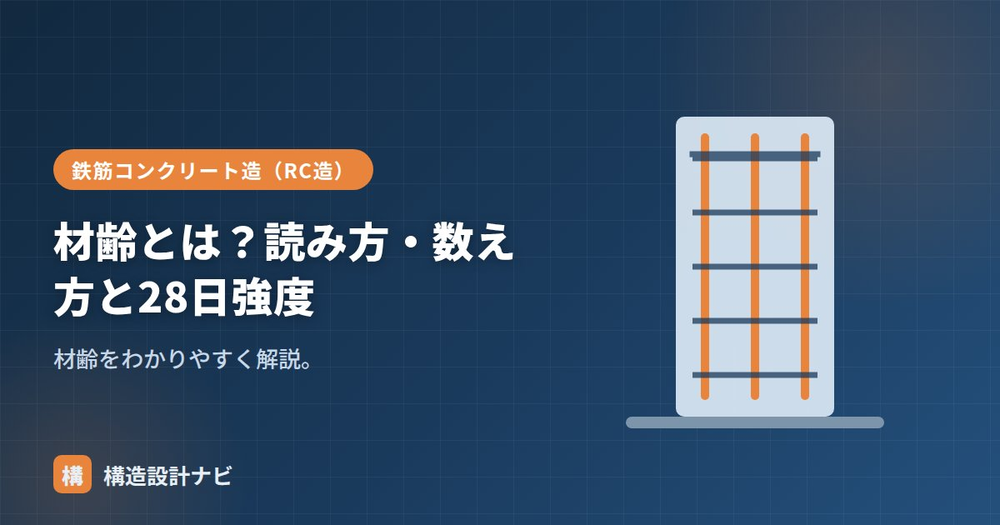

材齢とは？読み方・数え方と28日強度

材齢（ざいれい）とは、コンクリートを練り混ぜて（打ち込んで）からの経過日数のことです。コンクリートの強度は材齢とともに増えていきます。強度試験の結果を比較・評価する際には、必ず「材齢何日の強度か」をセットで示す必要があり、構造設計・施工管理の両方で頻繁に登場する基本用語です。
- 材齢は打込みからの経過日数を表し、コンクリートの「年齢」にあたる
- 設計基準強度は標準的に材齢28日の圧縮強度を基準とする
- 強度は材齢とともに増加するが、増え方は初期ほど速く徐々に緩やかになる
読み方と意味
読み方は「ざいれい」。コンクリートの「年齢」にあたる考え方で、人の年齢のように打込みからの日数を表します。木材や鋼材と異なり、コンクリートは打込み後も水和反応によって性質（強度）が変化し続けるため、「いつの時点の性質か」を明確にする材齢という考え方が欠かせません。
数え方
材齢は、コンクリートを練り混ぜた日（打ち込んだ日）を起点に数えます。「材齢7日」は打込みから7日後、「材齢28日」は28日後を指します。供試体（テストピース）を用いた強度試験でも、採取した日を材齢0日として、決められた材齢で圧縮試験を行うのが基本です。
材齢28日強度
コンクリートの設計基準強度（Fc）は、材齢28日の圧縮強度を基準とするのが標準です（普通セメントの場合）。コンクリートは打込み直後から強度が増え、初期に急速に、その後ゆるやかに伸びます。28日は、実用上の強度がほぼ得られ、管理しやすい材齢として基準に用いられます。早強では材齢3日・7日で評価することもあります。
強度の伸び方
コンクリートの強度は、材齢に対して直線的に増えるのではなく、打込み直後の数日間で急速に立ち上がり、その後は徐々に伸びが緩やかになるという特徴的なカーブを描きます。これは、セメントの水和反応が最初は活発に進み、時間とともに未反応のセメント粒子の周囲が生成物で覆われて反応の進行速度が落ちていくためです。このため、材齢28日以降も強度はゆっくりと増加を続けますが、実務上は材齢28日の強度をもって「設計に用いる基準の強度」とし、それ以降の伸びは安全側の余裕として扱うのが一般的な考え方です。試験結果を比較する際は、養生条件をそろえたうえで強度の補正を行う場合もあります。
養生・温度との関係
同じ材齢でも、養生や温度で強度は変わります。湿潤養生が不十分だったり低温だったりすると、材齢28日でも十分な強度が出ないことがあります。だからこそ、標準水中養生のように条件をそろえて強度を判定します。逆にいえば「材齢〇日」という表現だけでは強度は決まらず、養生条件とあわせて初めて意味を持つ数値になる点に注意が必要です。
強度試験の報告書を確認するとき必ず見るのは、材齢だけでなく供試体の養生条件だ。同じ材齢28日でも標準水中養生と現場封かん養生では数値が変わるため、どちらの条件の値かを取り違えると強度判定を誤ることになる。
「標準水中養生」「コンクリートの養生」「コンクリートの硬化時間」をどうぞ。
材齢と強度の伸び方（図解）
コンクリートの強度が材齢とともにどう増えるかを、グラフで確認しましょう。
材齢ごとの管理項目
現場では、材齢に応じて確認すべきことが変わります。工程管理の目安として整理しておきましょう。
| 材齢 | 主な管理項目 | 備考 |
|---|---|---|
| 0日（打込み当日） | 打込み・締固め・表面仕上げ、初期養生の開始 | 乾燥させないことが最重要 |
| 1〜3日 | せき板の取り外し（側面型枠）の判定 | 圧縮強度5N/mm²以上、または材齢と気温で判定 |
| 3日 | 早強セメントの湿潤養生期間の目安 | 早強なら3日以上 |
| 5日 | 普通セメントの湿潤養生期間の目安 | 普通なら5日以上 |
| 7日 | 1週強度の確認（参考値） | 28日強度の6〜7割程度が目安 |
| 28日 | 設計基準強度の判定（圧縮強度試験） | 合否判定の基準 |
材齢28日を待たずに、7日の時点で強度の傾向を把握するためです。7日強度が想定を大きく下回っていれば、配合や養生に問題がある可能性が高く、28日を待たずに原因調査や対策を始められます。逆に7日で十分な強度が出ていれば、後工程を安心して進められます。28日強度の6〜7割程度が一つの目安ですが、セメントの種類や気温で変わります。
よくある質問
Q1. 材齢28日を待たないと型枠は外せないのですか？
外せます。型枠の取り外し時期は、材齢28日の設計基準強度とは別の基準で判定します。柱・壁などの側面のせき板は、コンクリートの圧縮強度が5N/mm²以上（または材齢と平均気温による規定日数）で取り外せます。一方、スラブ下・梁下の支保工は、設計基準強度に達するか、少なくとも12N/mm²以上かつ構造計算で安全が確認できることが条件となり、より厳しい判定になります。
Q2. 材齢28日以降も強度は伸び続けるのですか？
伸び続けます。セメントの水和反応は長期にわたって継続するため、材齢1年で28日強度の2割増し程度になることもあります。ただし設計ではこの伸びを見込まず、28日強度を基準として安全側に扱います。逆に言えば、経年による強度増加は安全率の上乗せとして働きます。ただし、これは適切に養生された場合の話で、早期に乾燥したコンクリートは強度の伸びが止まってしまいます。
Q3. 寒い時期は材齢28日でも強度が出ないことがありますか？
あります。水和反応は温度に依存するため、気温が低いと反応が遅く、同じ材齢でも強度が低くなります。特に打込み初期に凍結すると、組織が破壊されて後から強度が回復しません（初期凍害）。このため寒中コンクリートでは、構造体強度補正値を大きく設定して呼び強度を割り増し、あわせて保温養生を行います。積算温度（温度×時間の累積）を用いて強度を推定する管理方法もあります。
まとめ
- 材齢（ざいれい）は打込みからの経過日数。コンクリートの年齢。
- 設計基準強度は標準で材齢28日の圧縮強度を基準とする。
- 強度は初期に急速に伸び、その後は緩やかに増加するカーブを描く。
- 同じ材齢でも養生・温度で強度は変わる。条件をそろえて判定する。